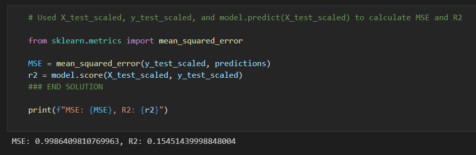
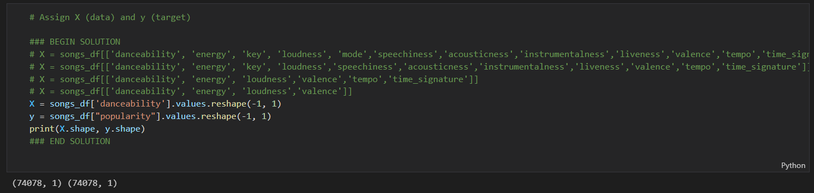

The purpose of this project was to invetigate whether the attributes of a song can be used build a model to predict popularity. As this is numerical value, and I am using a number of independent variables, Linear regression should be the model which is used to make this prediction.
These are the features first used for these models:
Full data set: N = 2,633
X =['danceability', 'energy', 'key', 'loudness', 'mode','speechiness','acousticness','instrumentalness','liveness','valence','tempo','time_signature','duration_ms']
y ='popularity'
30% test size

When calculating the MSE and R2 we don't get a great result: .998 and .155 respectively.
Below are the results when I run Scikit learn using different linear regression models. Not the result I was looking for. The R2 seems so low that there is possible no way to model the popularity of a song based on these combination of attributes.
At this stage my thinking is that there may still be a way to build a regression model to predict song popularity. I am going to try two things:
Running with more data
Trying different combinations of the independent variables (song attributes)
New parameters
Full data set: N = 74,078 (does more data mean a more accurately trained model?)
X was populated with different combinations of song attributes. By removing some of the less variable attributes (see attributes analysis) my thinking was that my models' R2 may be able to be increased. Example: X = songs_df[['danceability', 'energy', 'loudness','valence']]
y ='popularity'
30% test size

When calculating the MSE and R2 the results were even worse?! The highest R2 score achieved was using the Ridge model which gave back .0209.